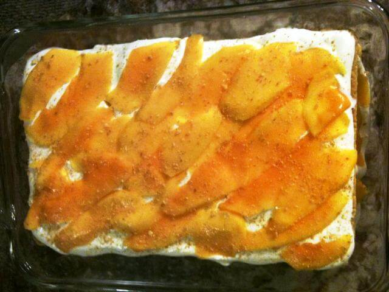

Classic Mango Graham
Mango graham cake is a popular dessert. It is a favorite for all occassions.This dessert is easy ti make.It is creamy and refreshing no-bake dessert.Kids loves this dessert because it is delicious.
Classic Mango Graham Recipe
- 5 Packs - Graham crackers
- 2-3 Pcs - ripe mangoes
- 3 Packs - all purpose cream (chilled)
- 2 Cans - condensed milk
- 2 Pcs - Cheese
- 1 - Large rectangular tupperware
Steps on how to make Classic mango graham
- in a large bowl, whip chilled all purpose cream
- add condensed milk and mix until mixture is homogenous
- chill the mixture for 10 minutes
- puree the mango
- mix the mango puree into the mixture
- start the layering: bottom layer must be the mixture.
- alternate the mixture and the graham crackers
- grate cheese in one layer of mixture
- top the graham cake with cream.
- chill the cake on the fridge for 4 hrs (so graham crackers will absorb some of the cream)
- after chilling, store in the freezer.
- optional: decorate the top with mango slices, crushed grahams &/or grated cheese

Source: https://www.everydayme.com.ph/home/cooking/classic-mango-graham-cake